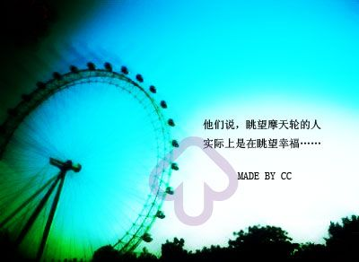

Loveme,ifyoucan
《飞跃情海》，一部台湾电影，这是我有兴趣可以重复看几遍的片子之一。虽然，影片并没有什么过人之处，并不精致的剧情，并不精致的情感，并不精致的表演，可是，却因为自然而对它记忆尤新！
me,if you can" title="Love me,if you can">
以前的自己，也象电影中的林依晨一样，很容易地相信爱情，同时也相信只要我爱就会得到，并且还曾顽固地以为：以为自己可以找到更好的，以为我可以轻易地喜欢上任何人，虽然也许不会天长地久。
只是还没有很多年，我就没心没肺地忘了那些曾经有过的那么重要的片段和心情，而记忆也只在那些不曾留意过的细枝末节上一扫而过～